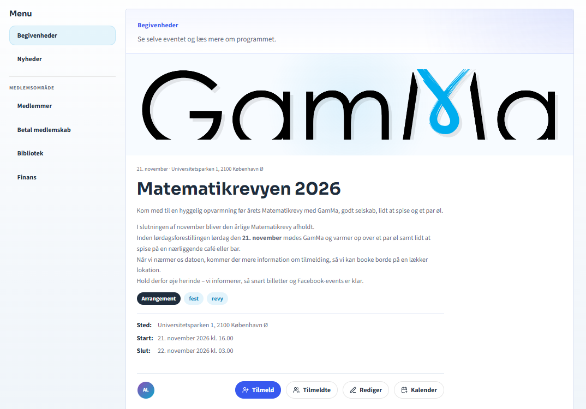
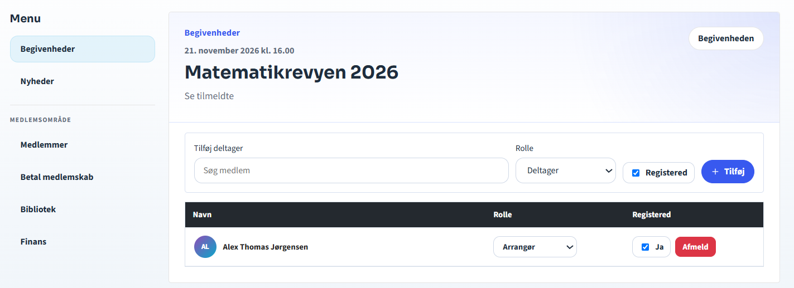

QA · Tilmeldinger
Redigér tilmeldinger til et event
Kræver: registrations.edit eller content.edit. Eventarrangører kan redigere deres eget event.
- Åbn eventet, og vælg Se tilmeldte.
- Hvis du vil tilføje en deltager, skal du søge efter medlemmet, vælge rolle og markere tilmeldingen. Vælg derefter Tilføj.
- Redigér rollen eller status direkte på tilmeldingen.
- Vælg Afmeld, når en tilmelding skal fjernes.
- Funktionen er kun tilgængelig, mens tilmeldingen er åben.
- Kontrollér listen, før du forlader siden.

